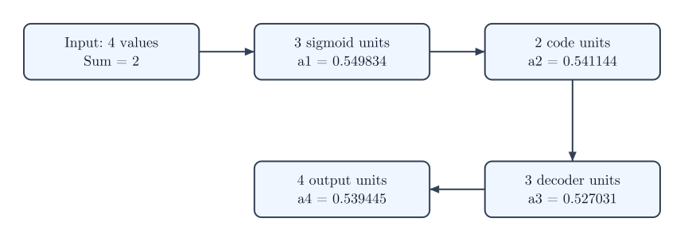
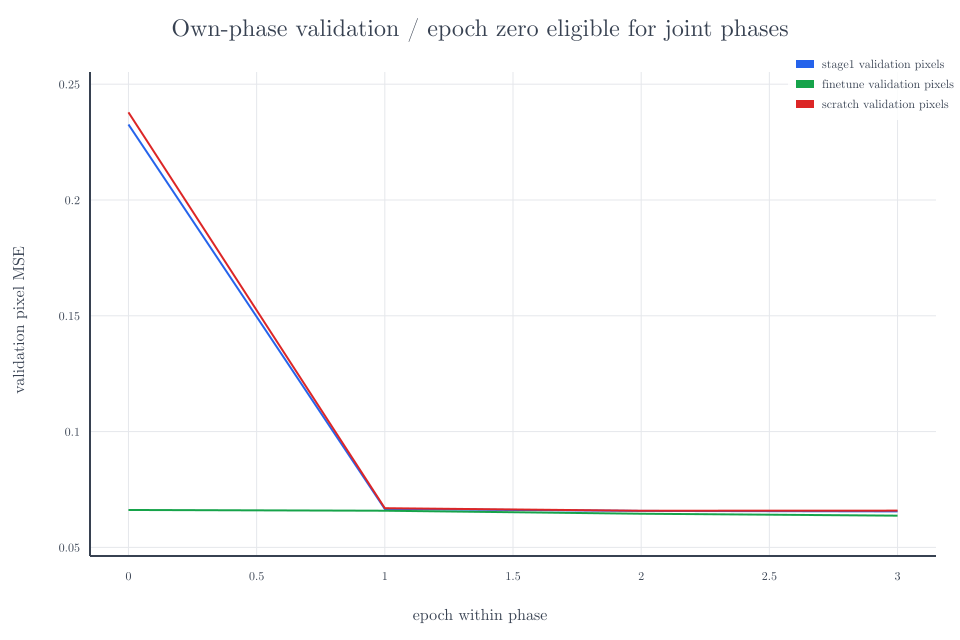
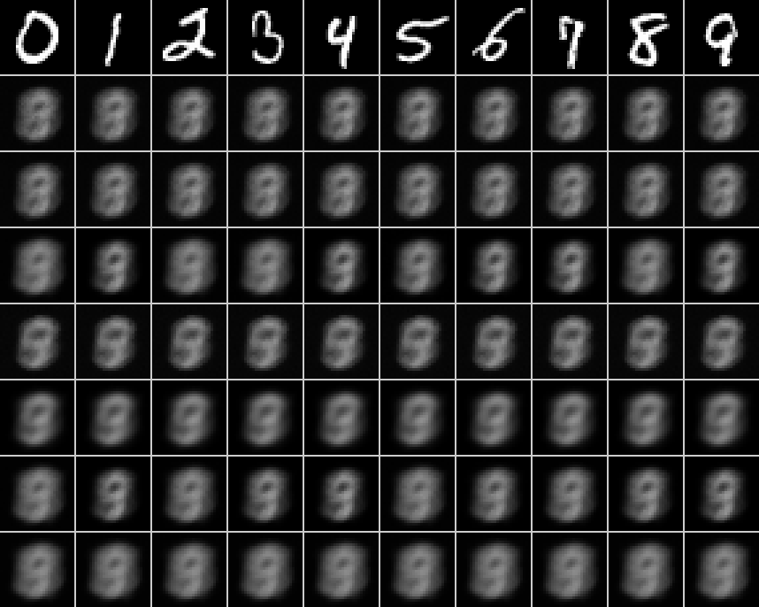

Stacked Autoencoders: Greedy Fits, Exact Transfer and Joint Fine-Tuning
Abstract
A deep autoencoder can be initialized by training shallow reconstruction models in sequence. This report first fits a 784–64–784 sigmoid model on MNIST, freezes its selected encoder and caches its outputs, then fits a 64–16–64 model on those actual representations. Both encoders and both decoders transfer exactly into a 784–64–16–64–784 stack before joint fine-tuning. A separate scratch stack has the same full architecture and joint-phase batch order. The report keeps every Adam update and validation choice explicit, derives the decoder composition and an error bound, and checks restoration, frozen caches and code controls. Fine-tuned test MSE is 0.06606, versus 0.06818 for scratch and 0.06780 for the fitting mean. The staged path uses nine data passes against scratch's three, so this short comparison cannot isolate a causal benefit of pretraining or establish a compute-matched advantage.
Two shallow objectives, then one full objective
Let \(f_1:X\mapsto Y\) and \(g_1:Y\mapsto\hat X\) be the first sigmoid encoder/decoder; let \(f_2:Y\mapsto Z\) and \(g_2:Z\mapsto\hat Y\) be the second. The experiment solves three different finite-step fitting problems:
[Bengio, Lamblin, Popovici and Larochelle](https://papers.nips.cc/paper_files/paper/2006/hash/5da713a690c067105aeb2fae32403405-Abstract.html) study greedy training followed by whole-network refinement. This report retains the source's small all-sigmoid MSE experiment, not a reproduction of its published classification results. There are no labels in any loss, tied decoder weights, RBM steps or hidden fitting constructors. Stage two sees cached representations from the *selected frozen* first model, not random features, raw images or a concurrently changing encoder.
#include <dm/dm.hpp>
int main() {
std::filesystem::create_directories("build");
dm::graphics::Diagram d(54, 1100);
d.node("x", {0, 0}, "MNIST pixel rows\n784 coordinates")
.node("s1", {6, 0}, "Stage 1: 784 → 64 → 784\nSelect by validation, then freeze")
.node("y", {12, 0}, "Cache selected f1(X)\n64 detached target coordinates")
.node("s2", {12, -3}, "Stage 2: 64 → 16 → 64\nLearn the cached targets")
.node("t", {6, -6}, "Transfer all eight arrays\nBoth encoders and both decoders")
.node("f", {0, -6}, "Fine-tune the full stack\nOriginal pixels are targets")
.edge("x", "s1")
.edge("s1", "y")
.edge("y", "s2")
.edge("s2", "t")
.edge("t", "f")
.edge("x", "f")
.save_svg("build/stacked_method.svg");
}
models::SigmoidAutoencoder supplies the reusable forward computation for every geometry.
Its integer widths are positive, mirrored and strictly decreasing into the central code. Every
layer is sigmoid with independent Glorot weights and zero biases, named layer<i>/W,b.
SigmoidAutoencoderDecode takes only explicit codes and the complete geometry, retaining
original decoder layer indices. Both functions keep gradients and owning tensor handles;
they contain no optimizer, transfer or stage-selection policy.
A hand-checkable four-layer stack
Take widths [4,3,2,3,4], input [0.2,0.4,0.6,0.8], every weight 0.1 and every bias 0. Because all units in a layer have equal weights, its repeated activities satisfy \(a_1=\sigma(0.2)\), \(a_2=\sigma(0.3a_1)\), \(a_3=\sigma(0.2a_2)\) and \(a_4=\sigma(0.3a_3)\). This deliberately degenerate example teaches composition, not useful feature learning. It has eight learned leaves and 48 scalars. The program checks every activity against the scalar formulas and exact standalone two-layer decoding.
#include <dm/dm.hpp>
int main() {
namespace n = dm::nn;
const auto type = n::DType::Float64;
const n::Shape widths{4, 3, 2, 3, 4};
n::ParameterStore p(1543, type);
const auto x = n::tensor({.2, .4, .6, .8}, {1, 4}, type);
{
n::NoGradGuard guard;
n::models::SigmoidAutoencoder(p, x, widths);
}
for (const auto& name : p.names())
p.set(name, n::full(p.at(name).shape(), name.ends_with("/W") ? .1 : 0., type));
const auto layers = n::models::SigmoidAutoencoder(p, x, widths);
auto sigmoid = [](double z) { return 1 / (1 + std::exp(-z)); };
const double a1 = sigmoid(.2), a2 = sigmoid(.3 * a1), a3 = sigmoid(.2 * a2),
a4 = sigmoid(.3 * a3);
const std::vector<double> expected{a1, a2, a3, a4};
std::print("| layer | width | repeated activity |\n|---:|---:|---:|\n");
dm::graphics::Diagram d(58, 1100);
d.node("x", {0, 0}, "Input: 4 values\nSum = 2")
.node("h", {5, 0}, std::format("3 sigmoid units\na1 = {:.6f}", a1))
.node("z", {10, 0}, std::format("2 code units\na2 = {:.6f}", a2))
.node("r", {10, -3}, std::format("3 decoder units\na3 = {:.6f}", a3))
.node("o", {5, -3}, std::format("4 output units\na4 = {:.6f}", a4))
.edge("x", "h")
.edge("h", "z")
.edge("z", "r")
.edge("r", "o");
for (int i = 0; i < 4; ++i) {
if (n::max(n::abs(layers[i] - expected[i])).item() > 1e-14)
return 1;
std::print("| {} | {} | {:.9f} |\n", i, widths[i + 1], expected[i]);
}
if (p.count() != 48 ||
n::max(n::abs(n::models::SigmoidAutoencoderDecode(p, layers[1], widths) - layers.back()))
.item() != 0)
return 1;
const auto loss = n::mean(n::square(layers.back() - x));
const auto gradients = n::grad(loss, p.parameters());
for (const auto& g : gradients)
if (!std::isfinite(n::sum(n::square(g)).item()) || n::sum(n::square(g)).item() <= 0)
return 1;
d.save_svg("build/stacked_toy.svg");
std::print("Pixel MSE {:.9f}; all eight gradient tensors finite and nonzero.\n", loss.item());
}| layer | width | repeated activity |
|---|---|---|
| 0 | 3 | 0.549833997 |
| 1 | 2 | 0.541144302 |
| 2 | 3 | 0.527030835 |
| 3 | 4 | 0.539445174 |
Pixel MSE 0.051555922; all eight gradient tensors finite and nonzero.

For any layer \(H_{l+1}=\sigma(H_lW_l+b_l)\), the output preactivation derivative for \(L=\operatorname{MSE}(H_L,X)\) is \(\Delta_L=2(H_L-X)\odot H_L\odot(1-H_L)/(Bd)\). Earlier deltas are \(\Delta_l=(\Delta_{l+1}W_l^\top)\odot H_l\odot(1-H_l)\), with weight derivatives \(\partial L/\partial W_l=H_l^\top\Delta_{l+1}\) and matching bias row sums. Greedy stage two uses Y as its target and normalizes by B×64, while full reconstruction normalizes by B×784. In joint fitting gradients traverse all four layers; during greedy stage two the cached Y has no gradient path to stage one.
The source's separate 4–3–2–3–4 sinusoidal-weight fixture is retained in native tests: all 24 activities and all 48 weight/bias derivatives are compared with independent scalar chain rules. Additional Float64 finite differences test every parameter, input and second derivative.
The executed full graph and exact transfer map
Stage one has 101, 200 scalars, stage two 2,128, and the full stack 103,328 in eight leaves. The full layer counts are 50,240, 1,040, 1,088 and 50,960. Geometry is symmetric; decoder matrices are independent, not tied transposes. A one-image shape probe executes the full graph with named layer boundaries. Graph style, Blocks detail, linear scales, a two-pixel visibility floor, six sampled planes and eight sampled neurons preserve the 784–64–16–64–784 shapes in labels.
#include <dm/dm.hpp>
int main() {
namespace n = dm::nn;
n::ParameterStore p(1553);
const n::Shape widths{784, 64, 16, 64, 784};
n::Module model(
[&](const n::Tensor& x) {
const auto layers = n::models::SigmoidAutoencoder(p, x, widths);
auto previous = x;
const std::vector<std::string> labels{
"Encoder 1: 784 → 64",
"Encoder 2: code 16",
"Decoder 2: 16 → 64",
"Decoder 1: raw pixels"};
for (int i = 0; i < 4; ++i) {
n::model_stage(labels[i], previous, layers[i]);
previous = layers[i];
}
return layers.back();
},
"All-sigmoid stacked autoencoder: untied 784–64–16–64–784");
n::ModelPlotOptions options;
options.style = n::ModelPlotStyle::Graph;
options.detail = n::ModelPlotDetail::Blocks;
options.max_neurons = 8;
options.sizing.spatial_scale = n::ModelPlotScale::Linear;
options.sizing.channel_scale = n::ModelPlotScale::Linear;
options.sizing.minimum_extent = 2;
options.sizing.max_planes = 6;
const auto figure = model.plot(n::zeros({1, 784}), options);
if (p.count() != 103328 || p.size() != 8 || figure.parameter_count() != 103328)
return 1;
figure.save_svg("build/stacked_architecture.svg");
std::print("| full-stack parameter | scalars |\n|---|---:|\n");
for (const auto& name : p.names())
std::print("| {} | {} |\n", name, p.at(name).numel());
}| full-stack parameter | scalars |
|---|---|
| layer0/W | 50176 |
| layer0/b | 64 |
| layer1/W | 1024 |
| layer1/b | 16 |
| layer2/W | 1024 |
| layer2/b | 64 |
| layer3/W | 50176 |
| layer3/b | 784 |

| full-stack layer | selected source layer | role |
|---|---|---|
| layer0 | stage1/layer0 | first encoder |
| layer1 | stage2/layer0 | second encoder |
| layer2 | stage2/layer1 | second decoder |
| layer3 | stage1/layer1 | first decoder |
Both W and b transfer for each row. Existing full-stack leaves are overwritten in place with
ParameterStore::set, preserving the already-created optimizer's references. Values copy into
independent initialized storage, so later joint updates cannot mutate frozen stages. Transfer
checks cover all names, shapes, dtypes and value bytes. The optimizer's fresh zero moments are
not copied from either shallow model.
Genuine MNIST and frozen data partitions
Native preparation loads the original balanced 1,000 fitting, 200 validation and200 test images. Fit and validation use disjoint official training IDs; test IDs are from the official test split. Float32 [0,1] pixels flatten without resizing. All phases use the same original source IDs and record order, even when their target coordinates change. Labels only choose gallery columns.
#include <dm/dm.hpp>
int main() {
namespace n = dm::nn;
std::filesystem::create_directories("build");
const std::filesystem::path cache = dm::datasets::data_home();
dm::datasets::prepare_example_data("mnist-assets", cache.string());
const auto pools = n::models::LoadSaliency(cache / "saliency");
n::NamedTensors data;
std::print("| pool | images | features |\n|---|---:|---:|\n");
for (int i = 0; i < 3; ++i) {
const std::string name = i == 0 ? "fit" : i == 1 ? "validation" : "test";
data.emplace_back(name + "_images", pools[i].images.reshape({pools[i].images.size(0), 784}));
data.emplace_back(name + "_source_ids", pools[i].source);
if (i == 2)
data.emplace_back("test_labels", pools[i].labels);
std::print("| {} | {} | 784 |\n", name, pools[i].images.size(0));
}
n::save_npz("build/stacked_data.npz", data);
std::filesystem::copy_file(
cache / "saliency" / "manifest.json",
"build/stacked_data_manifest.json",
std::filesystem::copy_options::overwrite_existing);
}| pool | images | features |
|---|---|---|
| fit | 1000 | 784 |
| validation | 200 | 784 |
| test | 200 | 784 |
Four explicit fitting phases
Stage-one seed 1549 initializes 784–64–784. Stage two and both full stacks use seed 1553; full-stack initial arrays agree before transfer. Adam uses learning rate 0.003, moments 0.9/0.999 and epsilon 1e-8. Each phase has three epochs, batch 32, order seed 1559, 1,000 records per epoch and 96 updates including a final batch of eight. Greedy phases select among completed epochs 1–3. Fine-tuning and scratch also admit epoch 0, so they may retain their starting model if validation never improves. Validation MSE accumulates Float64 errors from Float32 predictions; test pixels do not select weights. Fitting losses are pre-update, validation post-epoch.
The complete loop below creates every model and optimizer, caches detached first-stage codes, performs the eight transfers, runs all 384 updates and restores each selected checkpoint. Full weights, first gradients/batches/updates, epoch 0 and all completed epochs remain saved. The learning plot compares pixel MSE only; stage-two latent MSE remains a separate table quantity.
#include <dm/dm.hpp>
int main() {
namespace n = dm::nn;
std::map<std::string, n::Tensor> data;
for (const auto& [key, value] : n::load_npz("build/stacked_data.npz"))
data.emplace(key, value);
const auto fit = data.at("fit_images"), validation = data.at("validation_images"),
test = data.at("test_images");
const auto source = data.at("fit_source_ids").to_vector<int>();
const std::vector<std::string> names{"stage1", "stage2", "finetune", "scratch"};
const std::vector<n::Shape> widths{
{784, 64, 784}, {64, 16, 64}, {784, 64, 16, 64, 784}, {784, 64, 16, 64, 784}};
const std::vector<std::uint64_t> seeds{1549, 1553, 1553, 1553};
std::vector<std::unique_ptr<n::ParameterStore>> stores;
std::vector<std::unique_ptr<n::Optimizer>> optimizers;
n::OptimizerConfig config;
config.kind = n::OptimizerKind::Adam;
for (int phase = 0; phase < 4; ++phase) {
stores.push_back(std::make_unique<n::ParameterStore>(seeds[phase]));
{
n::NoGradGuard guard;
n::models::SigmoidAutoencoder(
*stores.back(), n::zeros({1, widths[phase].front()}), widths[phase]);
}
optimizers.push_back(std::make_unique<n::Optimizer>(*stores.back(), .003, config));
}
if (stores[0]->count() != 101200 || stores[1]->count() != 2128 || stores[2]->count() != 103328 ||
stores[2]->flatten() != stores[3]->flatten())
return 1;
std::map<std::string, n::Tensor> cached;
n::NamedTensors frozen;
std::vector<int> selected_epochs;
auto plot = dm::graphics::RPlot::create();
const std::vector<dm::graphics::RGB> colors{
{37, 99, 235}, {148, 163, 184}, {22, 163, 74}, {220, 38, 38}};
std::print(
"| phase | epoch | fitting MSE / pre-update mean | validation MSE | target space "
"|\n|---|---:|---:|---:|---|\n");
for (int phase = 0; phase < 4; ++phase) {
auto& p = *stores[phase];
const std::string prefix = "build/stacked_" + names[phase];
if (phase == 2) {
n::NamedTensors transfer;
for (const auto& [target, name, store] :
std::vector<std::tuple<std::string, std::string, int>>{
{"layer0", "layer0", 0},
{"layer3", "layer1", 0},
{"layer1", "layer0", 1},
{"layer2", "layer1", 1}})
for (const auto& suffix : {"/W", "/b"})
transfer.emplace_back(target + suffix, stores[store]->at(name + suffix));
if (transfer.size() != p.size())
return 1;
for (const auto& name : p.names())
if (std::count_if(transfer.begin(), transfer.end(), [&](const auto& item) {
return item.first == name;
}) != 1)
return 1;
for (const auto& [name, value] : transfer)
if (!p.contains(name) || p.at(name).shape() != value.shape() || p.dtype() != value.dtype())
return 1;
for (const auto& [name, value] : transfer)
p.set(name, value);
for (const auto& [name, value] : transfer)
if (!n::equal_bits(p.at(name), value))
return 1;
p.save("build/stacked_transferred.npz");
n::NoGradGuard guard;
const auto pretrained = n::models::SigmoidAutoencoder(p, test, widths[phase]);
const auto second =
n::models::SigmoidAutoencoder(*stores[1], cached.at("test_code"), widths[1]);
const auto nested = n::models::SigmoidAutoencoderDecode(*stores[0], second.back(), widths[0]);
if (!n::equal_bits(pretrained.back(), nested))
return 1;
n::save_npz(
"build/stacked_pretrained.npz",
{{"code", pretrained[1]},
{"reconstruction", pretrained.back()},
{"stage2_test_reconstruction", second.back()}});
}
const auto input = phase == 1 ? cached.at("fit_code") : fit,
target_validation = phase == 1 ? cached.at("validation_code") : validation;
const auto score = [&](const n::Tensor& prediction, const n::Tensor& target) {
return n::mean(
n::square(
n::cast(prediction, n::DType::Float64) - n::cast(target, n::DType::Float64)))
.item();
};
p.save(prefix + "_initial.npz");
double initial_fit, epoch0;
{
n::NoGradGuard guard;
initial_fit = score(n::models::SigmoidAutoencoder(p, input, widths[phase]).back(), input);
const auto initial_validation =
n::models::SigmoidAutoencoder(p, target_validation, widths[phase]);
epoch0 = score(initial_validation.back(), target_validation);
n::save_npz(prefix + "_epoch0_validation.npz", {{"prediction", initial_validation.back()}});
}
p.save(prefix + "_epoch0.npz");
const bool include_zero = phase >= 2;
double best = include_zero ? epoch0 : std::numeric_limits<double>::infinity();
int selected = 0, updates = 0;
if (include_zero)
p.save(prefix + "_best.npz");
std::vector<double> epochs{0}, valid{epoch0};
std::vector<double> training{initial_fit};
std::print(
"| {} | 0 | {:.9f} | {:.9f} | {} |\n",
names[phase],
initial_fit,
epoch0,
phase == 1 ? "64 frozen coordinates" : "784 pixels");
n::BatchOrder order(1000, 32, 1559);
std::ofstream batches(prefix + "_batches.tsv");
batches << "epoch\tstep\trow\tsource_id\n";
for (int epoch = 1; epoch <= 3; ++epoch) {
order.begin_epoch();
double total = 0;
int seen = 0;
for (;;) {
const auto rows = order.next();
if (rows.empty())
break;
const auto x = n::take_rows(input, rows);
const auto layers = n::models::SigmoidAutoencoder(p, x, widths[phase]);
const auto loss = n::mean(n::square(layers.back() - x));
if (updates == 0) {
n::GradOptions keep;
keep.retain_graph = true;
const auto gradients = n::grad(loss, p.parameters(), keep);
n::NamedTensors saved;
for (std::size_t i = 0; i < gradients.size(); ++i) {
const double norm = n::sum(n::square(gradients[i])).item();
if (!std::isfinite(norm) || norm <= 0)
return 1;
saved.emplace_back(p.names()[i], gradients[i]);
}
n::save_npz(prefix + "_first_gradients.npz", saved);
n::save_npz(prefix + "_first_batch.npz", {{"images", x}});
}
const double value = loss.item();
if (!std::isfinite(value) || value < 0)
return 1;
optimizers[phase]->minimize(loss);
total += rows.size() * value;
seen += int(rows.size());
for (auto row : rows)
batches << epoch << '\t' << updates << '\t' << row << '\t' << source[row] << '\n';
if (updates == 0)
p.save(prefix + "_first_update.npz");
++updates;
}
n::NoGradGuard guard;
const auto validation_output =
n::models::SigmoidAutoencoder(p, target_validation, widths[phase]);
const double metric = score(validation_output.back(), target_validation);
n::save_npz(
prefix + "_epoch" + std::to_string(epoch) + "_validation.npz",
{{"prediction", validation_output.back()}});
if (seen != 1000 || !std::isfinite(metric))
return 1;
p.save(prefix + "_epoch" + std::to_string(epoch) + ".npz");
if (metric < best) {
best = metric;
selected = epoch;
p.save(prefix + "_best.npz");
}
epochs.push_back(epoch);
valid.push_back(metric);
training.push_back(total / seen);
std::print(
"| {} | {} | {:.9f} | {:.9f} | {} |\n",
names[phase],
epoch,
total / seen,
metric,
phase == 1 ? "64 frozen coordinates" : "784 pixels");
}
if (updates != 96 || !batches)
return 1;
p.load(prefix + "_best.npz");
p.save(prefix + "_model_arrays.npz");
{
n::NoGradGuard guard;
const double final_fit =
score(n::models::SigmoidAutoencoder(p, input, widths[phase]).back(), input);
if (!(final_fit < initial_fit || (include_zero && selected == 0)))
return 1;
}
n::save_npz(
prefix + "_selection.npz",
{{"epoch", n::full({}, selected, n::DType::Int32)},
{"validation_mse", n::full({}, best, n::DType::Float64)},
{"epochs", n::from_vector(epochs, {4})},
{"fit_path", n::from_vector(training, {4})},
{"validation_path", n::from_vector(valid, {4})}});
selected_epochs.push_back(selected);
if (phase != 1)
plot.lines(epochs, valid, names[phase] + " validation pixels", colors[phase], 2.);
if (phase == 0) {
for (const auto& name : p.names())
frozen.emplace_back(name, p.at(name).detach().clone());
n::NoGradGuard guard;
n::NamedTensors arrays;
for (const auto& split : {"fit", "validation", "test"}) {
const auto code =
n::models::SigmoidAutoencoder(p, data.at(std::string(split) + "_images"), widths[0])[0];
if (code.requires_grad())
return 1;
cached.emplace(std::string(split) + "_code", code);
arrays.emplace_back(std::string(split) + "_code", code);
}
n::save_npz("build/stacked_cache.npz", arrays);
}
if (phase >= 1) {
for (const auto& [name, value] : frozen)
if (!n::equal_bits(stores[0]->at(name), value))
return 1;
n::NoGradGuard guard;
if (!n::equal_bits(
n::models::SigmoidAutoencoder(*stores[0], fit, widths[0])[0], cached.at("fit_code")))
return 1;
}
}
plot.x_label("epoch within phase")
.y_label("validation pixel MSE")
.title("Own-phase validation / epoch zero eligible for joint phases")
.save_svg("build/stacked_learning.svg");
std::print(
"Selected epochs {}/{}/{}/{}. Frozen caches and all eight transfers pass.\n",
selected_epochs[0],
selected_epochs[1],
selected_epochs[2],
selected_epochs[3]);
}| phase | epoch | fitting MSE / pre-update mean | validation MSE | target space |
|---|---|---|---|---|
| stage1 | 0 | 0.232093308 | 0.232601953 | 784 pixels |
| stage1 | 1 | 0.100216253 | 0.066572297 | 784 pixels |
| stage1 | 2 | 0.069412455 | 0.065737035 | 784 pixels |
| stage1 | 3 | 0.068759110 | 0.065531254 | 784 pixels |
| stage2 | 0 | 0.213893661 | 0.212822241 | 64 frozen coordinates |
| stage2 | 1 | 0.113711454 | 0.039058709 | 64 frozen coordinates |
| stage2 | 2 | 0.021585138 | 0.011104070 | 64 frozen coordinates |
| stage2 | 3 | 0.009251237 | 0.007079876 | 64 frozen coordinates |
| finetune | 0 | 0.069055941 | 0.066152228 | 784 pixels |
| finetune | 1 | 0.068979932 | 0.065829554 | 784 pixels |
| finetune | 2 | 0.068231760 | 0.064528282 | 784 pixels |
| finetune | 3 | 0.067025168 | 0.063692774 | 784 pixels |
| scratch | 0 | 0.237496568 | 0.237847139 | 784 pixels |
| scratch | 1 | 0.108480108 | 0.066921307 | 784 pixels |
| scratch | 2 | 0.069407296 | 0.065824544 | 784 pixels |
| scratch | 3 | 0.068948709 | 0.065868869 | 784 pixels |
Selected epochs 3/3/3/2. Frozen caches and all eight transfers pass.

The source selections are stage1/stage2/fine-tune/scratch = 3/3/3/2. Joint phases each receive 96 updates, but the staged route additionally trains two shallow models: 288 updates and nine data passes in total versus 96 updates and three passes for scratch. Model sizes differ across those passes, so step counts are not measured floating-point work or wall-clock speed ratios. This comparison holds the joint phase fixed; it cannot attribute all differences to pretraining alone.
Decoder composition and an error bound
After transfer the full reconstruction is exactly \(g_1(g_2(f_2(f_1(X))))\), including both learned decoders. With Y=f1(X), R1=X−g1(Y) and R2=Y−g2(f2(Y)), the triangle inequality gives
Dividing by \(\sqrt{Bd}\) yields \(\operatorname{RMSE}_{pre}\le\operatorname{RMSE}_1+ \tfrac14\|W_{g_1}\|_F\sqrt{64/784}\operatorname{RMSE}_{stage2}\). This loose but checkable bound explains why a small latent MSE does not guarantee a better pixel reconstruction: the losses have different coordinates, scales and decoder sensitivity. It is a bound for the frozen transferred model, not a convergence or fine-tuning guarantee.
The next program restores a fresh fine-tuned stack, checks exact code/reconstruction and standalone decoding, single-versus-batch agreement within 1e-6, and immutable weights. It then scores the frozen pretrained model, fine-tuning, scratch, fitting mean, shifted codes and zero codes against the same original held-out pixels. No control is refitted.
#include <dm/dm.hpp>
int main() {
namespace n = dm::nn;
std::map<std::string, n::Tensor> data, cache, pre;
for (const auto& [key, value] : n::load_npz("build/stacked_data.npz"))
data.emplace(key, value);
for (const auto& [key, value] : n::load_npz("build/stacked_cache.npz"))
cache.emplace(key, value);
for (const auto& [key, value] : n::load_npz("build/stacked_pretrained.npz"))
pre.emplace(key, value);
const n::Shape shallow{784, 64, 784}, deep{784, 64, 16, 64, 784};
n::ParameterStore first(1549), fine(1553), scratch(1553), deployed(1553);
first.load("build/stacked_stage1_best.npz", false);
fine.load("build/stacked_finetune_best.npz", false);
scratch.load("build/stacked_scratch_best.npz", false);
deployed.load("build/stacked_finetune_best.npz", false);
const auto before = deployed.flatten();
n::NoGradGuard guard;
const auto test = data.at("test_images");
const auto first_result = n::models::SigmoidAutoencoder(first, test, shallow),
a = n::models::SigmoidAutoencoder(fine, test, deep),
b = n::models::SigmoidAutoencoder(scratch, test, deep),
restored = n::models::SigmoidAutoencoder(deployed, test, deep);
if (!n::equal_bits(restored[1], a[1]) || !n::equal_bits(restored[3], a[3]) ||
!n::equal_bits(n::models::SigmoidAutoencoderDecode(deployed, restored[1], deep), restored[3]))
return 1;
const auto single = n::models::SigmoidAutoencoder(deployed, n::take_rows(test, {0}), deep);
if (n::max(n::abs(single.back() - n::take_rows(restored.back(), {0}))).item() > 1e-6)
return 1;
const auto shuffled = n::models::SigmoidAutoencoderDecode(
deployed,
n::concat({n::slice_axis(restored[1], 0, 1, 200), n::slice_axis(restored[1], 0, 0, 1)}, 0),
deep);
const auto zero = n::models::SigmoidAutoencoderDecode(deployed, n::zeros({200, 16}), deep);
const auto mean = n::broadcast_to(
n::cast(
n::mean(n::cast(data.at("fit_images"), n::DType::Float64), {0}, true), n::DType::Float32),
test.shape());
auto score = [](const n::Tensor& x, const n::Tensor& target) {
return n::mean(n::square(n::cast(x, n::DType::Float64) - n::cast(target, n::DType::Float64)))
.item();
};
std::print("| reconstruction | held-out pixel MSE |\n|---|---:|\n");
for (const auto& [name, value] : n::NamedTensors{
{"first shallow model", first_result.back()},
{"transferred pretrained stack", pre.at("reconstruction")},
{"joint fine-tuning", a.back()},
{"scratch", b.back()},
{"fitting mean", mean},
{"shifted fine-tuned codes", shuffled},
{"zero fine-tuned codes", zero}})
std::print("| {} | {:.9f} |\n", name, score(value, test));
const double rmse1 = std::sqrt(score(first_result.back(), test)),
rmse2 =
std::sqrt(score(pre.at("stage2_test_reconstruction"), cache.at("test_code"))),
decoder_norm =
n::sqrt(n::sum(n::square(n::cast(first.at("layer1/W"), n::DType::Float64))))
.item();
const double bound = rmse1 + decoder_norm * .25 * std::sqrt(64. / 784) * rmse2,
actual = std::sqrt(score(pre.at("reconstruction"), test));
if (actual > bound + 1e-6 || before != deployed.flatten())
return 1;
std::print(
"Pretrained RMSE {:.9f} <= bound {:.9f}; stage1 RMSE {:.9f}, latent stage2 RMSE {:.9f}, "
"decoder Frobenius norm {:.9f}.\nFresh restore/decode/batch and immutable checks pass.\n",
actual,
bound,
rmse1,
rmse2,
decoder_norm);
n::NamedTensors packed;
for (const auto& [key, value] : data)
packed.emplace_back(key, value);
packed.insert(
packed.end(),
{{"stage1_fit_code", cache.at("fit_code")},
{"stage1_validation_code", cache.at("validation_code")},
{"stage1_test_code", cache.at("test_code")},
{"stage1_test_reconstruction", first_result.back()},
{"pretrained_test_code", pre.at("code")},
{"pretrained_test_reconstruction", pre.at("reconstruction")},
{"finetuned_test_code", a[1]},
{"finetuned_test_reconstruction", a.back()},
{"scratch_test_code", b[1]},
{"scratch_test_reconstruction", b.back()},
{"mean_reconstruction", mean},
{"shuffled_reconstruction", shuffled},
{"zero_reconstruction", zero}});
n::save_npz("build/stacked_outputs.npz", packed);
n::save_npz(
"build/stacked_bound.npz",
{{"stage2_test_reconstruction", pre.at("stage2_test_reconstruction")},
{"actual_rmse", n::full({}, actual, n::DType::Float64)},
{"bound_rmse", n::full({}, bound, n::DType::Float64)},
{"decoder_frobenius", n::full({}, decoder_norm, n::DType::Float64)}});
}| reconstruction | held-out pixel MSE |
|---|---|
| first shallow model | 0.067960857 |
| transferred pretrained stack | 0.068480899 |
| joint fine-tuning | 0.066063591 |
| scratch | 0.068178502 |
| fitting mean | 0.067798074 |
| shifted fine-tuned codes | 0.067734778 |
| zero fine-tuned codes | 0.069448788 |
Pretrained RMSE 0.261688554 <= bound 0.356667868; stage1 RMSE 0.260693033, latent stage2 RMSE 0.085672124, decoder Frobenius norm 15.683604290. Fresh restore/decode/batch and immutable checks pass.
The transferred stack's MSE 0.06848 exceeds the first shallow model's 0.06796, despite the small representation loss. The checked RMSE bound is deliberately loose: 0.35667 against actual 0.26169. It describes a worst-case allowance, not an expected reconstruction score.
Fine-tuned test MSE 0.06606 is lower than scratch 0.06818 and the fitting mean 0.06780 in this run. The transferred model alone gives 0.06848. Shifting fine-tuned codes raises error to 0.06773, close to the constant mean; zero codes give 0.06945. The code carries some useful alignment, but reconstructions and controls remain close to broad digit averages. The sixteen Float32 values are continuous coordinates, not a specified compressed bitstream, generative prior or proof of classification quality. There is no classification confusion matrix for this reconstruction task.
Reconstructions without quality filtering
Columns select the first held-out occurrence of each digit 0–9. Rows are original, first shallow model, transferred pretrained stack, fine-tuned stack, scratch stack, fitting mean, shifted-code decoder and zero-code decoder. Every panel uses fixed [0,1] grayscale, nearest-neighbour enlargement and no error amplification. These are raw predictions with no copied pixels.
#include <dm/dm.hpp>
int main() {
namespace n = dm::nn;
std::map<std::string, n::Tensor> saved;
for (const auto& [key, value] : n::load_npz("build/stacked_outputs.npz"))
saved.emplace(key, value);
const auto labels = saved.at("test_labels").to_vector<int>(),
ids = saved.at("test_source_ids").to_vector<int>();
std::vector<std::int64_t> rows;
std::print("| digit | original MNIST source ID |\n|---:|---:|\n");
for (int digit = 0; digit < 10; ++digit) {
const auto found = std::find(labels.begin(), labels.end(), digit);
if (found == labels.end())
return 1;
rows.push_back(found - labels.begin());
std::print("| {} | {} |\n", digit, ids[rows.back()]);
}
std::vector<n::Tensor> panels;
for (const auto& key :
{"test_images",
"stage1_test_reconstruction",
"pretrained_test_reconstruction",
"finetuned_test_reconstruction",
"scratch_test_reconstruction",
"mean_reconstruction",
"shuffled_reconstruction",
"zero_reconstruction"})
panels.push_back(n::take_rows(saved.at(key), rows));
n::save_image_grid(
n::concat(panels, 0).reshape({80, 28, 28, 1}),
"build/stacked_reconstructions.png",
10,
0,
1,
2,
.8,
3);
}| digit | original MNIST source ID |
|---|---|
| 0 | 66921 |
| 1 | 63380 |
| 2 | 68936 |
| 3 | 62280 |
| 4 | 62094 |
| 5 | 65222 |
| 6 | 61209 |
| 7 | 61721 |
| 8 | 69402 |
| 9 | 62570 |

Verification and limits
The core owns configurable forward layers and standalone decoding; complete stage orchestration
remains in editable C++ and native Python/R loops. Native tests preserve all 24 original toy
activities and 48 analytic derivatives, check every small-model first/second finite difference,
validate geometry before creation and verify decoder-only names/counts. Frozen-cache and transfer
tests confirm that both decoders copy independently and that an optimizer created before
transfer still updates the existing joint leaves. Language tests verify owning list elements,
code gradients, strict integer geometry and standalone decoder handles. All source arrays in
42 report archives agree with the original by dtype, shape and every value byte; the same
42 source archives agree across normal C++, Python and R workflows. The optional independent
NumPy oracle (scripts/check_stacked_autoencoder.py) verifies all 309,984 first parameter
derivatives (maximum difference 7.6e-10), four bit-exact first Adam updates and 2,873,600
validation/held-out/control prediction pixels (maximum difference 1.5e-7). It also checks all
sixteen validation histories/checkpoints, the epoch-zero policy, eight transfer arrays, cached
representations (maximum activation difference 2.3e-7) and the RMSE bound. Source and report
scalar histories agree within 1e-12 from differing Float64 reduction order. The check neither
prepares data nor replaces the demonstrated optimizer loops.
This experiment demonstrates actual greedy pretraining and exact composition, not merely a deep architecture called stacked. Its separate objectives, extra data passes and epoch-zero selection rule are essential to interpreting the measured result. More training, matched total computation, multiple seeds and downstream tasks would be additional experiments.
References
- Y. Bengio, P. Lamblin, D. Popovici and H. Larochelle (NIPS2006), [Greedy Layer-Wise Training of Deep Networks](https://papers.nips.cc/paper_files/paper/2006/hash/5da713a690c067105aeb2fae32403405-Abstract.html). The staged strategy motivates this smaller all-sigmoid MSE adaptation.
- Y. LeCun, C. Cortes and C. J. C. Burges, [MNIST handwritten digit database](https://yann.lecun.com/exdb/mnist/). The native manifest records original files and selected official record IDs.